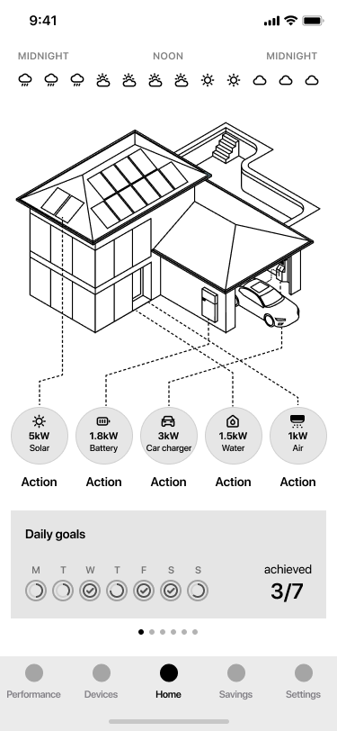
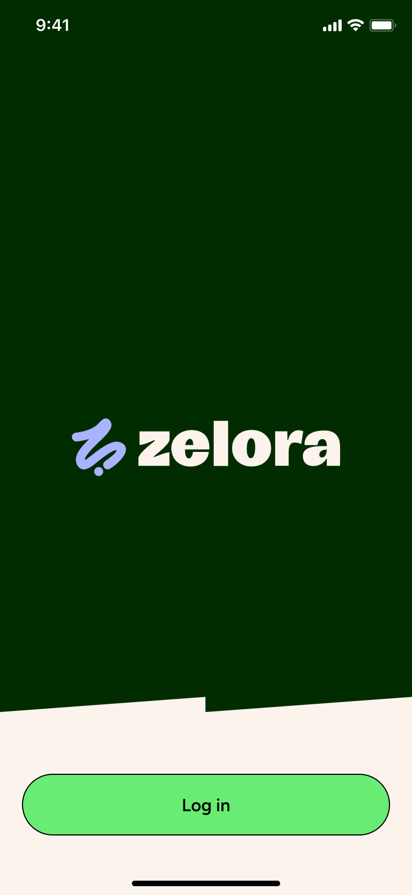

All work
Zelora & Enreal
Designing a consumer energy app — and the white-label system behind it — for two brands and thousands of solar and battery owners.

Designing a consumer energy app — and the white-label system behind it — for two brands and thousands of solar and battery owners.
Zelora and Enreal are consumer apps that give solar and battery owners visibility over their home energy — generation, consumption, savings, carbon. I designed the full product experience at Evergen: the UX and UI for both apps, and the white-label system that lets a single product serve two distinct brands.
Zelora (backed by Bunnings) targets homeowners with solar and battery systems. Enreal serves home electrification customers. Both needed to make real-time energy data feel useful and motivating to everyday people — not engineers — without losing the depth that engaged users want.


Early explorations used spider diagrams and radial charts — technically accurate, but they required interpretation. We landed on a house graphic as the centrepiece of the home screen: an immediately recognisable metaphor that lets users read their energy status at a glance without needing to decode a visualisation.


Most users want to know their solar is working and they're saving money. Some want to go deep. Rather than building a separate advanced section — or watering everything down — we designed a toggle between a simplified summary view and a detailed chart view on the same screen. Users choose their own level of engagement.

Showing a kilowatt-hour figure next to a dollar amount doesn't land for most people. We invested heavily in the savings screen — breaking savings down into terms that felt personal and concrete, and surfacing carbon impact in a way users could actually relate to their daily behaviour.


Delivering the same product under two brand identities isn't cosmetic work — it forces you to separate structure, interaction, and skin from the start. I built the component system so that a colour swap and logo change would produce a coherent brand experience, not a recoloured UI. The underlying architecture was also designed to be extended, so the team could continue building new features without touching the core layout logic.

The web portal targets the same user as the app — a homeowner who wants to look at their energy data at length. The desktop dashboard uses a more technical lens: historical charts, seven-day energy views, and detailed breakdowns that don't fit comfortably on a phone screen.
Released alongside the mobile app, the portal gives users a consistent experience across devices without duplicating the app's core job. The app is the daily check-in; the portal is the deeper dive when you want to understand what's actually happening with your system.


Zelora and Enreal launched within the same six-month window that also included the Pooled by Poolwerx app. Delivering three consumer energy products in parallel was intense — by the time they shipped, I was ready to move on, and I did.
What I'm proud of is the foundation. The design system and component architecture were solid enough that the team shipped roughly six months of additional features after my departure, without a major rework of the underlying structure. That's how I'd measure the work — not by what launched, but by what it enabled.
